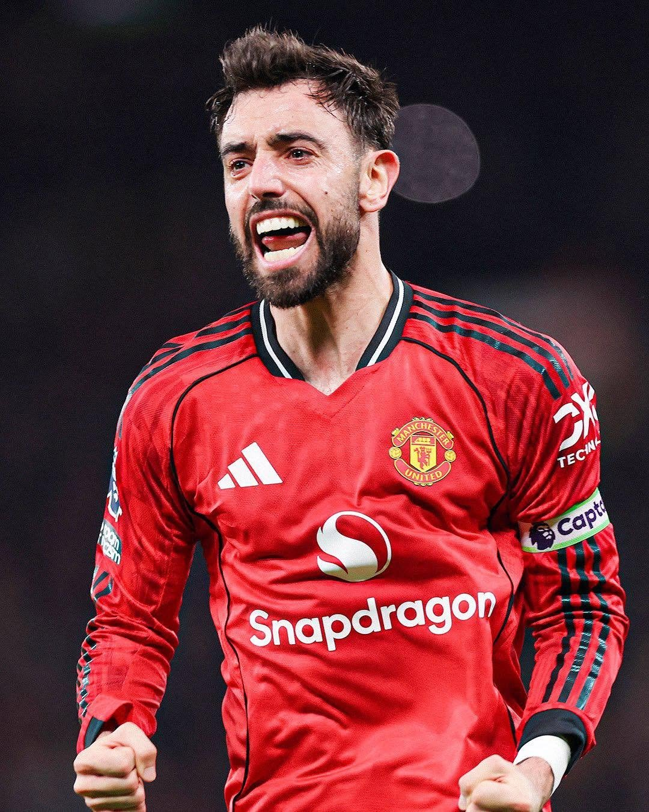

Old Trafford showdown: Man United and Tottenham seek a lift tonight
Sports
Neither Manchester United nor Tottenham has had the start to the season it wanted, and tonight at Old Trafford one of them gets a chance to change that. Kickoff is at 7:30 PM East Africa Time.
United sit 12th on five points and are chasing only their second league win of the campaign under Michael Carrick. Their visitors are in a deeper hole. Spurs are bottom of the table with two points and still waiting for a first victory. History also favours the visitors: United have beaten them just once in their last nine meetings, a 2-0 win at home in February.
The official team sheets should arrive roughly an hour before kickoff. Until then, here is how the teams are expected to look.
United are tipped to play 4-2-3-1. Senne Lammens is expected in goal, behind a back four of Diogo Dalot, Harry Maguire, Lisandro Martinez and Luke Shaw, the same group that has started recently. Carlos Baleba, the summer signing, is expected to anchor midfield next to Youri Tielemans, although some previews give Kobbie Mainoo that role. Captain Bruno Fernandes should play behind Matheus Cunha, with Bryan Mbeumo wide on one side and Marcus Rashford, if fit, on the other.
Rashford is not certain to play. He, Mainoo and Amad Diallo have only trained lightly after the international break, and Matthijs de Ligt is also in doubt. Carrick has confirmed that Patrick Dorgu will be out for several weeks with a hamstring problem picked up on international duty. Benjamin Sesko, Manuel Ugarte and several other players are sidelined, and Noussair Mazraoui is a doubt after a knock with Morocco.
Tottenham, who are also expected to line up in a 4-2-3-1, have a few decisions left. Previews disagree on the back line and midfield, with Antonin Kinsky tipped in goal, Micky van de Ven and Jan Paul van Hecke available in defence, and Sandro Tonali in midfield. Up front, Dominic Solanke is expected to lead the line with Omar Marmoush and Savinho on the flanks. Roberto De Zerbi has said van de Ven and van Hecke are fit, though he is mindful of the personal side for van Hecke, whose twins were born this week. Dejan Kulusevski has trained but is unlikely to start.
Expect this to be updated as soon as both clubs announce their starting elevens.